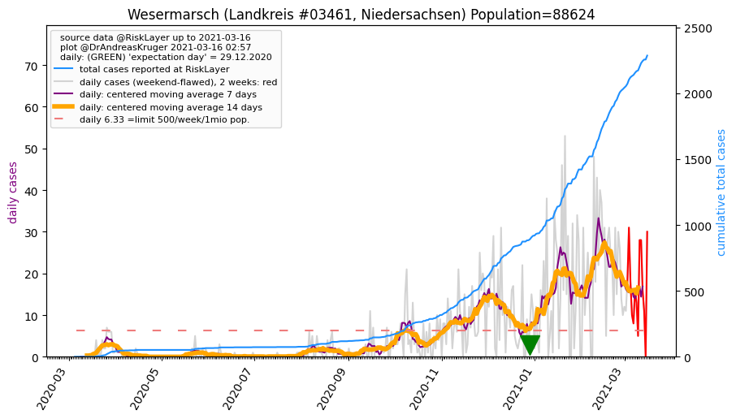
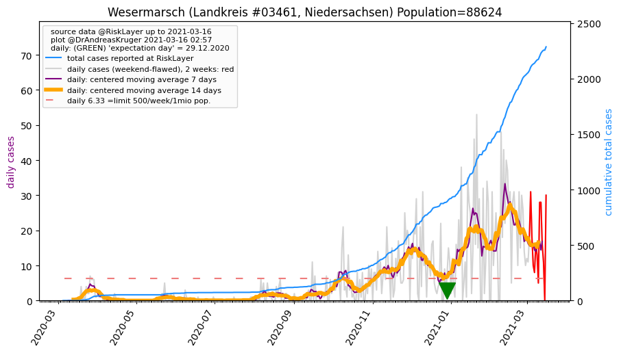

")
")
_KS (20.6 km)")
")
")
")
")
")
")

| Oldenburg_LK (0.0 km) |
Delmenhorst_KS (18.5 km) |
Oldenburg (Oldb)_KS (20.6 km) |
| Bremen_KS (30.0 km) |
Cloppenburg_LK (33.7 km) |
Diepholz_LK (35.7 km) |
| Ammerland_LK (35.9 km) |
Vechta_LK (38.2 km) |
Osterholz_LK (40.5 km) |
| Wesermarsch_LK (41.1 km)  |
All plots are regenerated with new data every night. Beware this temporary hotspot is an experimental page - it might get removed, so please do not link to it. Instead link to project http://tiny.cc/cov19de.